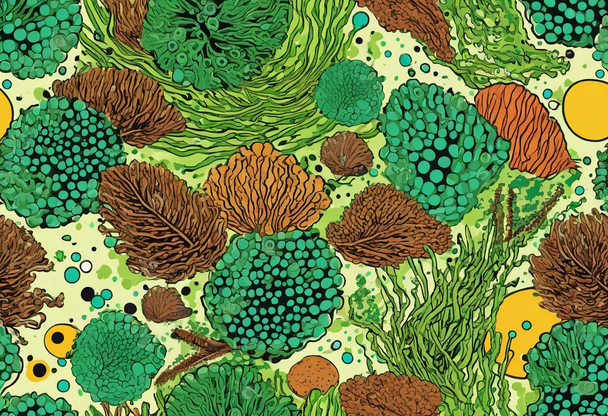

Aquarium Algenfresser im Porträt – Fische und Wirbellose
Algen sind der ewige Begleiter jedes Aquarianers. Mal sind sie nur ein leichter grüner Belag auf der Scheibe, mal überwuchern sie Pflanzen und Dekoration in dicken, unansehnlichen Teppichen. Der natürliche Feind der Algen – nein, nicht die Chemie – sind Algenfresser. Viele Fische, Garnelen und Schnecken haben sich im Laufe der Evolution auf den Verzehr von Algen spezialisiert. Sie sind die natürlichen Putzmannschaften deines Aquariums. In diesem Porträt stelle ich dir die wichtigsten und effektivsten Algenfresser vor – ihre Vorlieben, ihre Haltungsansprüche und wo ihre Grenzen liegen.
Wichtig vorweg: Algenfresser sind kein Allheilmittel gegen ein Algenproblem. Sie bekämpfen die Symptome, nicht die Ursache. Wenn dein Aquarium unter starkem Algenwachstum leidet, liegt das meist an einem Ungleichgewicht von Licht, Nährstoffen oder CO₂. Algenfresser helfen, das Algenwachstum zu kontrollieren und das Becken sauber zu halten, aber sie ersetzen keine Problemanalyse. Wer Algenfresser als „Problemlöser“ kauft, ohne die Ursache zu beheben, wird enttäuscht werden – die Algen wachsen schneller, als alle Tiere der Welt sie fressen können.
Die effektivsten algenfressenden Fische
Otocinclus (Ohrgitterharnischwels)
Otocinclus sind die wohl beliebtesten Algenfresser im Süßwasseraquarium. Die kleinen, max. 5 Zentimeter großen Welse aus Südamerika sind friedlich, gesellig und unermüdlich im Kampf gegen Braunalgen und weiche Grünbeläge. Sie saugen mit ihrem speziell angepassten Maul Algen von Scheiben, Pflanzenblättern und Dekoration ab. Otocinclus sind ausgesprochene Friedfische und müssen in einer Gruppe von mindestens 5 bis 7 Tieren gehalten werden. Einzelhaltung führt zu Stress und frühem Tod. Ihr Magen ist klein – sie fressen fast ununterbrochen. Ein gut eingefahrenes Aquarium mit einem gesunden Algenbesatz ist für sie ideal. Bei Futterknappheit nimmst du überbrühte Zucchinischeiben oder spezielle Algentabs als Ergänzung. Wichtig: Otocinclus reagieren empfindlich auf schlechte Wasserqualität und Medikamente. Ein gut bepflanztes Aquarium mit stabilen Werten ist die beste Voraussetzung für ihre Haltung.
Antennenwelse (Ancistrus)
Antennenwelse sind die Klassiker unter den Algenfressern. Die nachtaktiven Welse werden 10 bis 15 Zentimeter groß und sind für ihre charakteristischen „Antennen“ (Barteln) am Maul bekannt – daher der Name. Sie fressen mit Vorliebe weiche Algen, besonders den grünen Belag auf Scheiben und Dekoration. Antennenwelse sind relativ pflegeleicht, brauchen aber ein ausreichend großes Becken (ab 100 Litern für ein Paar). Sie sind Höhlenbrüter und nutzen Versteckmöglichkeiten als Revierzentren. Die Männchen sind territorial, daher sollte man nicht zu viele Männchen in einem Becken halten. Ihre Nahrung besteht hauptsächlich aus Algen, aber auch Gemüse (Gurke, Zucchini, Paprika) und spezielle Welsfuttertabs werden gerne angenommen. Antennenwelse sind friedlich und können mit den meisten Gesellschaftsfischen vergesellschaftet werden.
SAE – Siamesische Rüsselbarbe (Crossocheilus oblongus)
Die Siamesische Rüsselbarbe ist der Spezialist für eine besonders hartnäckige Algenart: Pinselalgen. Während viele andere Algenfresser an Pinselalgen scheitern, macht die SAE kurzen Prozess mit ihnen. Sie wird 12 bis 15 Zentimeter groß, ist sehr aktiv und braucht ein Becken ab 150 Zentimetern Länge. SAEs sind Schwarmfische und sollten in Gruppen von mindestens 5 Tieren gehalten werden. Einzeln oder zu zweit werden sie oft aggressiv gegenüber anderen Fischen. Sie sind unermüdlich unterwegs und putzen Blätter, Steine und Scheiben. Wichtig: Der SAE wird oft mit der falschen Rüsselbarbe (Garra cambodgiensis) verwechselt, die weniger algenfressend, dafür aber aggressiver ist. Achte beim Kauf auf den lateinischen Namen Crossocheilus oblongus.
Gebänderter Saugwels (Glyptoperichthys gibbiceps)
Der Gebänderte Saugwels ist ein imposanter Algenfresser, der bis zu 45 Zentimeter groß wird – definitiv nichts für kleine Aquarien. Jungtiere sind beliebt, weil sie unermüdlich Algen fressen, aber die meisten Aquarianer unterschätzen ihre Endgröße. Sie brauchen ein Becken ab 400 Litern und produzieren entsprechend viel Ausscheidungen. Wer einen solchen Wels halten möchte, sollte von Anfang an ein großes Becken einplanen oder den Wels nach Erreichen einer bestimmten Größe in ein geeignetes größeres Becken umsetzen können.
Wirbellose Algenfresser – klein, aber effektiv
Amano-Garnelen (Caridina multidentata)
Amano-Garnelen sind die absolute Spitze unter den wirbellosen Algenfressern. Die bis zu 5 Zentimeter großen Garnelen aus Japan und Taiwan fressen ein breites Spektrum an Algen: Fadenalgen, Pinselalgen, Braunalgen und weiche Grünalgen. Sie sind äußerst effektiv und arbeiten sich unermüdlich durch das Aquarium. Amanos sind friedlich und können mit den meisten Fischen und Garnelen vergesellschaftet werden. Sie werden in Gruppen ab 5 Tieren gehalten. Ein besonderer Vorteil: Im Süßwasser können sie sich nicht vermehren, da ihre Larven Brackwasser benötigen – du wirst also nicht von Hunderten Junggarnelen überrascht. Amano-Garnelen sind recht robust, brauchen aber stabile Wasserwerte und einen gut eingefahrenen Filter. Sie sind wahre Putzkräfte und sollten in keinem Aquarium mit Algenproblemen fehlen.
Red Cherry und andere Zwerggarnelen
Neocaridina davidi (Red Cherry Garnelen) sind nicht nur schön anzusehen, sondern auch nützliche Algenfresser. Sie sind kleiner als Amanos (max. 3 Zentimeter) und fressen bevorzugt weiche Algen, Biofilme und Futterreste. Sie sind weniger effektiv gegen hartnäckige Algen wie Pinselalgen, dafür vermehren sie sich im Süßwasser und bilden schnell eine stabile Population. Eine Gruppe von 10 bis 20 Red Cherrys hält den Algenbelag auf Pflanzen und Dekoration in Schach. Sie sind ideal für Nano-Aquarien ab 20 Litern und vertragen sich mit friedlichen Fischen. Wichtig: Sie sind empfindlich gegenüber Kupfer (in vielen Medikamenten und Wasseraufbereitern enthalten) – behandle sie nur mit garnelengeeigneten Medikamenten.
Posthornschnecken (Planorbarius corneus)
Schnecken sind die heimlichen Helden der Algenbekämpfung. Posthornschnecken sind besonders effektiv gegen weiche Grünalgen und Futterreste. Sie haben ein charakteristisches, flach gewundenes Gehäuse und werden 2 bis 3 Zentimeter groß. Sie sind friedlich, vermehren sich bei guter Fütterung mäßig (nicht so stark wie Blasenschnecken) und sind ausgezeichnete Indikatoren für die Wasserqualität. Bei Sauerstoffmangel steigen sie an die Oberfläche und zeigen dies deutlich an. Posthornschnecken sind Zwitter, können sich aber nicht selbst befruchten – du brauchst also mindestens zwei Exemplare für eine stabile Population. Sie sind ideal für jedes Gesellschaftsbecken.
Turmdeckelschnecken (Melanoides tuberculata)
Turmdeckelschnecken sind spezialisiert auf eine andere Aufgabe: Sie lockern den Bodengrund, fressen Mulm und abgestorbene Pflanzenreste und verbessern die Durchlüftung des Bodens. Sie sind nachtaktiv und leben die meiste Zeit im Bodengrund, wo sie unermüdlich organisches Material verwerten. Sie vermehren sich im Süßwasser, aber die Population reguliert sich normalerweise selbst. Turmdeckelschnecken sind ideale Bodengrundpfleger, die das Substrat sauber und locker halten. Sie sind friedlich und mit allen Aquarienbewohnern verträglich.
Rennschnecken – die Putzkräfte der Scheiben
Rennschnecken (Neritina-Arten) sind die Spezialisten für Kieselalgen und Grünbelag auf den Aquarienscheiben. Sie haben ein hübsches, schwarz-gelb gestreiftes oder gepunktetes Gehäuse und werden etwa 2 bis 3 Zentimeter groß. Rennschnecken sind sehr effektiv und unermüdlich – sie „rasen“ förmlich über die Scheiben und hinterlassen blitzblanke Bahnen. Im Süßwasser können sie sich nicht vermehren, da ihre Larven Brackwasser brauchen. Sie sind ideal für Aquarien, die zur Kieselalgenbildung neigen (häufig in der Einfahrphase). Rennschnecken sind völlig friedlich und mit allen Fischen verträglich. Achte darauf, dass das Becken nicht aus dem Wasser ragt oder gut abgedeckt ist – Rennschnecken sind bekannt dafür, auszubrechen und auszutrocknen.
Die richtige Kombination verschiedener Algenfresser
Verschiedene Algenfresser haben unterschiedliche Vorlieben und Fresszonen. Eine sinnvolle Kombination deckt alle Bereiche des Aquariums ab. Ein typisches Team für ein Gesellschaftsbecken ab 100 Litern besteht aus 5 bis 7 Otocinclus für die Algen auf Pflanzen und Scheiben, 5 Amano-Garnelen für hartnäckige Algen und Biofilme, 2 bis 3 Posthornschnecken für weiche Algen und Reste und 2 bis 3 Turmdeckelschnecken für die Bodengrundpflege. Bei Pinselalgen ergänzt du das Team um 3 bis 5 Siamesische Rüsselbarben (nur in Becken ab 150 cm Länge). In kleinen Nano-Becken ab 20 Litern reichen meist 5 bis 10 Zwerggarnelen und 2 Rennschnecken völlig aus.
Grenzen der Algenbekämpfung durch Tiere
So nützlich Algenfresser auch sind – sie haben ihre Grenzen. Sie können keine Algenplage beseitigen, die durch ein massives Ungleichgewicht verursacht wird. Wenn dein Aquarium unter einer starken Algenblüte leidet, hilft kein noch so großer Algenfresser-Trupp. Du musst zuerst die Ursache beheben: zu viel Licht, zu viele Nährstoffe, zu wenig CO₂, ein Ungleichgewicht von Makro- und Mikronährstoffen oder eine zu geringe biologische Filterung. Prüfe deine Wasserwerte (Nitrat, Phosphat, Eisen), reduziere die Beleuchtungsdauer auf 6 bis 7 Stunden und erhöhe die CO₂-Zufuhr. Führe regelmäßige Wasserwechsel durch und entferne befallene Blätter. Erst wenn das Gleichgewicht wiederhergestellt ist, können Algenfresser ihre Arbeit tun und das System stabil halten.
Algenfresser sind die Polizei, nicht die Armee. Sie können eine stabile Ordnung aufrechterhalten, aber keinen Aufstand niederschlagen. Bekämpfe die Ursache, nicht die Symptome.
Pflege und Fütterung von Algenfressern
Die meisten Algenfresser brauchen nicht ausschließlich Algen, sondern eine ausgewogene Ernährung. In gut eingefahrenen Becken mit moderatem Algenbesatz finden sie meist ausreichend Nahrung. In sehr sauberen Becken oder bei hohem Besatz muss zugefüttert werden. Geeignet sind: Algentabs oder Welsfutter (für Otocinclus und Antennenwelse), überbrühte Gemüsestücke (Gurke, Zucchini, Paprika, Spinat – für fast alle Algenfresser), spezielles Garnelenfutter (für Garnelen), und fallende Laubblätter (Seemandelbaum, Buchenlaub – für Garnelen und Schnecken). Gemüsestücke sollten nach 24 Stunden aus dem Becken entfernt werden, bevor sie das Wasser belasten.
Achtung: Algenfresser dürfen nicht verhungern, auch wenn das Becken sauber aussieht. Gerade Otocinclus verhungern in übermäßig sauberen Aquarien, weil sie nicht genug Algen finden. Biete in diesem Fall regelmäßig Gemüse oder spezielles Futter an. Garnelen freuen sich über Laub und Mulm – ein natürlicher Bodengrund mit Laubschicht ist für sie ideal. Bei guter Fütterung sind Algenfresser aktiv, gut genährt und effektiv in ihrer Arbeit.
🛒 Algenfresser – Zubehör und Futter
Mit der richtigen Ausstattung unterstützt du deine Algenfresser bei ihrer wichtigen Arbeit:
Fazit – Algenfresser sind Helfer, nicht Retter
Algenfressende Fische, Garnelen und Schnecken sind aus einem gut funktionierenden Aquarium kaum wegzudenken. Sie übernehmen wichtige Aufgaben im Ökosystem, halten Algen in Schach und tragen zur natürlichen Balance bei. Doch sie sind kein Ersatz für eine gute Aquarienpflege und eine durchdachte Technik. Die Kombination aus stabilen Wasserwerten, richtigem Licht, ausgewogener Düngung und einer gut gewählten Putzmannschaft ist der Schlüssel zu einem algenarmen Aquarium. Wähle deine Algenfresser nach den spezifischen Algenproblemen in deinem Becken aus und achte auf ihre Haltungsansprüche – dann hast du lange Freude an ihnen und sie an dir.
Mehr zur Algenbekämpfung und zu den Ursachen von Algenwachstum findest du in unserem Artikel Algen im Aquarium erkennen und bekämpfen. Und wenn du mehr über Garnelen als Algenfresser erfahren möchtest, lies unseren Garnelen-Guide.